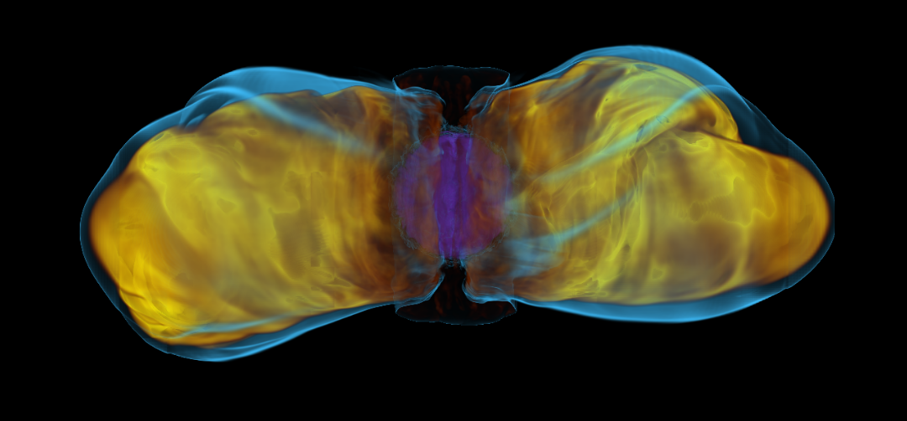

<!DOCTYPE html>
<html>

    
    <title>Chelsea Harris - SNe</title>
    <meta charset="UTF-8">
        <meta name="viewport" content="width=device-width, initial-scale=1">
            <link rel="stylesheet" href="https://www.w3schools.com/w3css/4/w3.css">
                <link rel="stylesheet" href="https://fonts.googleapis.com/css?family=Lato">
                    <link rel="stylesheet" href="https://cdnjs.cloudflare.com/ajax/libs/font-awesome/4.7.0/css/font-awesome.min.css">
                        <style>
                            html,body,h1,h2,h3,h4 {font-family:"Lato", sans-serif}
                            .mySlides {display:none}
                            .w3-tag, .fa {cursor:pointer}
                            .w3-tag {height:15px;width:15px;padding:0;margin-top:6px}
                            .col-container {display: table; width: 100%; }
                            .col { display: table-cell; padding: 16px; }
                            @media only screen and (max-width: 600px) {
                                .col { display: block; width: 100%; }
                            }
                        </style>
                        <body>
                            
                            <!-- Links (sit on top) -->
                            <div class="w3-top">
                                <div class="w3-row w3-large w3-light-green">
                                    <div class="w3-col s3">
                                        <a href="#" class="w3-btn w3-block">Home</a>
                                    </div>
                                    <div class="w3-col s3">
                                        <a href="#about" class="w3-btn w3-block">About (CV)</a>
                                    </div>
                                    <div class="w3-col s3">
                                        <a href="#research" class="w3-btn w3-block">Research</a>
                                    </div>
                                    <div class="w3-col s3">
                                        <a href="#collab" class="w3-btn w3-block">Collaborations</a>
                                    </div>
                                </div>
                            </div>
                            
                            <!-- Content -->
                            <div class="w3-content" style="max-width:1100px;margin-top:80px;margin-bottom:80px">
                                
                                <div class="w3-panel">
                                    <h1><b>Chelsea E. Harris</b></h1>
                                    <p>models supernovae</p>
                                </div>
                                
                                <!-- Slideshow -->
                                <div class="w3-container">
                                    <div class="w3-display-container mySlides">
                                        
                                            <div class="w3-display-topleft w3-container w3-padding-32">
                                                <span class="w3-teal w3-padding-large w3-animate-bottom">Collisions with Circumstellar Material</span>
                                            </div>
                                            </div>
                                    <div class="w3-display-container mySlides">
                                        
                                            <div class="w3-display-middle w3-container w3-padding-32">
                                                <span class="w3-teal w3-padding-large w3-animate-bottom">Formation of Magnetically-Confined Jets</span>
                                            </div>
                                            </div>
                                    
                                    <!-- Slideshow next/previous buttons -->
                                    <div class="w3-container w3-green w3-padding w3-xlarge">
                                        <div class="w3-left" onclick="plusDivs(-1)"><i class="fa fa-arrow-circle-left w3-hover-text-pink"></i></div>
                                        <div class="w3-right" onclick="plusDivs(1)"><i class="fa fa-arrow-circle-right w3-hover-text-pink"></i></div>
                                        
                                        <div class="w3-center">
                                            <span class="w3-tag demodots w3-border w3-transparent w3-hover-white" onclick="currentDiv(1)"></span>
                                            <span class="w3-tag demodots w3-border w3-transparent w3-hover-white" onclick="currentDiv(2)"></span>
                                        </div>
                                    </div>
                                </div>
                                
                                <!-- Grid -->
                                <div class="w3-row w3-container">
                                    <div class="w3-center w3-padding-16">
                                    </div>
                                    <div class="w3-col l3 m6 w3-lime w3-container w3-padding-16">
                                        <h3>Suite Modeling</h3>
                                        <p>Hundreds of one-dimensional models explore parameter space.</p>
                                    </div>
                                    
                                    <div class="w3-col l3 m6 w3-light-green w3-container w3-padding-16">
                                        <h3>Code Writing</h3>
                                        <p>High-order algorithms for next-generation supercomputers.</p>
                                    </div>
                                    
                                    <div class="w3-col l3 m6 w3-green w3-container w3-padding-16">
                                        <h3>Observations</h3>
                                        <p>Analysis, proposals, assistance with the application of models.</p>
                                    </div>
                                    
                                    <div class="w3-col l3 m6 w3-teal w3-container w3-padding-16">
                                        <h3>Inreach &amp; Outreach</h3>
                                        <p>Guidance for new scientists and connecting with the public.</p>
                                    </div>
                                </div>
                                
                                <!-- Grid -->
                                <div class="w3-row-padding" id="about">
                                    <div class="w3-center w3-padding-64">
                                        <span class="w3-xlarge w3-bottombar w3-border-green w3-padding-16">About</span>

                                    </div>
                                    
                                    <div class="w3-half w3-margin-bottom">
                                        <ul class="w3-ul w3-border w3-center w3-hover-shadow">
                                            <li class="w3-green w3-xlarge w3-padding-32">Curriculum Vitae</li>
                                            <li class="w3-padding-16">
                                                <h2 class="w3-small">Highest Degree</h2>
                                                PhD in Astrophysics, University of California Berkeley (2018)
                                            </li>
                                            <li class="w3-padding-16">
                                                <h2 class="w3-small">Current Position</h2>
                                                postdoctoral researcher, Michigan State University
                                                <h2 class="w3-small">Contact</h2>
                                                harr1561 (at) msu (dot) edu
                                            </li>
                                            <li class="w3-padding-16">
                                                <h2 class="w3-small">Publications</h2>
                                                ORCiD: 0000-0002-1751-7474<br>
                                                <a href="https://ui.adsabs.harvard.edu/search/q=orcid%3A0000-0002-1751-7474&sort=date%20desc%2C%20bibcode%20desc&p_=0" class="w3-large">ADS list of publications</a>
                                            </li>
                                            <li class="w3-sand w3-padding-16">
                                                <h2 class="w3-wide">
                                                    <a href="harris_cv.pdf" download>full CV</a></h2>
                                            </li>
                                        </ul>
                                    </div>
                                    
                                    <div class="w3-half w3-margin-bottom">
                                        <ul class="w3-ul w3-border w3-center w3-hover-shadow">
                                            <li class="w3-lime w3-xlarge w3-padding-32">Background Blurb</li>
                                            <li class="w3-padding-16">Chelsea Harris (she/hers or they/theirs)
                                                is from southern California.
                                                They began undergraduate study in 2008
                                                in the College of Creative Studies at the
                                                University of California Santa Barbara (UCSB).
                                                While at UCSB, they did observational research on
                                                active galaxies.
                                                They received their Bachelor of Science in Physics
                                                in 2012 and moved to the University of California Berkeley for
                                                graduate study in the Department of Astronomy and Astrophysics.
                                                There, they pursued theoretical research in Type Ia supernovae,
                                                advised by Peter Nugent and Dan Kasen, focusing on
                                                using theory to interpret and predict observations.
                                                In 2013 they were awarded a Department of Energy Computational
                                                Science Graduate Fellowship and their Masters degree in
                                                Astrophysics.
                                                Their PhD dissertation focused on models of Type I supernovae
                                                interacting with a distant circumstellar medium
                                                to constrain mass-loss and mass-transfer processes in
                                                binary supernova progenitor systems.
                                                In 2018 they began postdoctoral research at Michigan State University
                                                in the group of Sean Couch.
                                                Their primary focus is implementing a high-order, multidimensional
                                                magnetohydrodynamics algorithm into the FLASH code
                                                to study relativistic jets in core-collapse supernovae.
                                                They continue their work on interacting Type I supernovae.
                                                In 2019 they were named a Fredrick A. Howes Scholar.
                                                Their numerous hobbies are centered on outdoor activities and the arts.
                                            </li>

                                          </ul>
                                    </div>
                                    
                                 </div>
                                
                                <!-- Grid -->
                                <div class="w3-row-padding" id="research">
                                    <div class="w3-center w3-padding-64">
                                        <span class="w3-xlarge w3-bottombar w3-border-green w3-padding-16">Research</span>
                                    </div>
                                    
                                    <div class="w3-third w3-margin-bottom">
                                        <div class="w3-card-4">
                                            <!--  -->
                                            <div class="w3-container w3-center">
                                                <h3>Delayed Interaction in Type Ia Supernovae</h3>
                                                <p>Type Ia supernovae occur in binary systems
                                                that have a carbon-oxygen white dwarf gaining
                                                mass from an unidentified companion.
                                                The circumstellar medium (CSM) is a key discriminant of
                                                the companion, because it is made up of companion
                                                material and shaped by the mass donation process.
                                                The discovery of SNe Ia that collide with
                                                CSM over a month after explosion requires new models
                                                and new systems of observations.
                                                </p>
                                                <p >Selected Literature</p>
                                            </div>
                                        </div>
                                    </div>
                                                    
                                    <div class="w3-third w3-margin-bottom">
                                        <div class="w3-card-4">
                                            <!--  -->
                                            <div class="w3-container w3-center">
                                                <h3 >Delayed Interaction in Core-Collapse Supernovae</h3>
                                                <p>Core-collapse supernovae are observationally
                                                distinguished by the amount their envelopes have been
                                                lost. The process by which the massive hydrogen
                                                and helium envelopes are stripped from the star to
                                                create SNe Ibc is unknown.
                                                The discovery of SNe Ibc that collide with CSM over
                                                a month after explosion can shed light on the timescale
                                                of envelope loss.</p></br>
                                                <p >Selected Literature</p>
                                            </div>
                                        </div>
                                    </div>
                                                    
                                    <div class="w3-third w3-margin-bottom">
                                        <div class="w3-card-4">
                                            <div class="w3-container w3-center">
                                                <h3 >Core-Collapse Supernova Magnetohydrodynamics</h3>
                                                <p>Some Type Ic supernovae are associated with long gamma-ray
                                                bursts thus we know it is possible for the core collapse
                                                to create a relativistic, confined jet.
                                                The amplification of existing magnetic fields in the star
                                                by the conversion of rotational energy is likely the mechanism
                                                behind this phenomenon.</br></br></br></br>
                                                </p>
                                                <p >Selected Literature</p>
                                            </div>
                                        </div>
                                    </div>
                                </div>
                                                    
                        <!-- Collaborators -->
                                                    <div class="w3-center w3-padding-64" id="collab">
                                                    <span class="w3-xlarge w3-bottombar w3-border-green w3-padding-16">Collaborations</span>
                                                    </div>
                                                    
                                                    <div class="w3-container">
                                                        <div class="w3-center">
                                                            <h4>The teams I'm a part of &mdash; click to expand.</h4>
                                                            <p>If you'd like to collaborate, please e-mail me (harr1561 [at] msu [dot] edu).</p>
                                                        </div>
                                                        
                                                        <button onclick="myAccFunc('students')" class="w3-padding-16 w3-theme w3-button w3-block w3-left-align">Mentoring Students on Computational Research Projects</button>
                                                        <div id="students" class="w3-hide">
                                                            <div class="w3-container">
                                                                <h4>Students Mentored</h4>
                                                                <ul>
                                                                    <li>Cassandra Tang</li>
                                                                    <li>Brandon McIntyre</li>
                                                                </ul>
                                                                
                                                                <h4>Thinking of working with me? Here's what you need to know.</h4>
                                                                <p> Since I value equity, I prefer to work with students from
                                                                underrepresented backgrounds &mdash;
                                                                I just know they face unique challenges and I don't want access to
                                                                research to be one of them.
                                                                That said, I will not ask you to prove any demographic
                                                                status to do research with me, nor will I be using anyone as a trophy
                                                                or cultural educator.
                                                                I'm just putting this note here to give students from the most
                                                                privileged classes the opportunity to step aside.
                                                                </p>
                                                                
                                                                <h4> General expectations</h4>
                                                                For all students:
                                                                <ul>
                                                                <li> We will complete a mentor-mentee agreement form at the beginning of
                                                                your first project (examples
                                                                <a href="https://cdn.ymaws.com/www.gwis.org/resource/resmgr/files/mentor_mentee_agreement_-_ex.pdf" target="_blank">here</a>
                                                                ).</li>
                                                                <li> We will set production goals and a timeline for achieving them,
                                                                    and assess progress together.</li>
                                                                <li> Have a genuine curiosity about the science
                                                                goals of the project (no "code monkeys," please) even if your
                                                                long-term career plan is not science research.</li>
                                                                <li> Engage in a daily writing practice.</li>
                                                                </ul>
                                                                
                                                                <p class="w3-justified"> Summer research.
                                                                To engage in a summer research project with me,
                                                                you need to have experience in programming &mdash; does not matter which
                                                                language, as I will expect you to adapt to the language used.
                                                                If you are keen on writing a paper, a summer project with me
                                                                probably isn't a good fit.
                                                                </p>
                                                                
                                                                <p class="w3-justified"> Longer-term research.
                                                                As your research mentor, I am your advocate &mdash; I will
                                                                be responsible for promoting and defending your work, and
                                                                helping you achieve your career goals.
                                                                The type of person I want to advocate for is someone who is
                                                                considerate of and respectful to others, and
                                                                values communication skills and emotional intelligence skills
                                                                (these are skills, and there's no "one right answer", and
                                                                you don't have to be perfect).
                                                                This is because these skills affect your own research
                                                                productivity, the productivity of our community, and
                                                                our ability to make science inclusive.
                                                                </p>
                                                            </div>
                                                        </div>
                                                        
                                                        <button onclick="myAccFunc('teams')" class="w3-padding-16 w3-theme w3-button w3-block w3-left-align">Toward Exascale Astrophysics of Mergers and Supernovae (TEAMS) &mdash; USA (multi-institutional) Department of Energy SciDAC</button>
                                                        <div id="teams" class="w3-hide">
                                                            <div class="w3-container">
                                                                <p> <b> What is it? </b> TEAMS is a uniquely large national collaboration of
                                                                computational theorists who work on compact object mergers
                                                                and core-collapse supernovae to advance legacy codes to the
                                                                exascale level, with the science goal of
                                                                determining the origin of the r-process elements.
                                                                We meet annually, hosted at one of the PI's institutions.</p>
                                                                <p> <b> How do I fit in? </b>
                                                                I was hired for a postdoctoral position to implement a high-order
                                                                [of convergence/accuracy] method for magnetohydrodynamic simulations in
                                                                the FLASH code.
                                                                The target application of the code is forming jets in stellar core collapse.
                                                                </p>
                                                                <p> <b> Who's in it? </b>
                                                                Below I list my primary collaborators in TEAMS,
                                                                though the collaboration is much larger.
                                                                <ul>
                                                                    <li> Dr. Sean Couch (faculty, MSU)</li>
                                                                    <li> Dr. Andrew Christlieb (faculty, MSU)</li>
                                                                    <li> Dr. Luke Roberts (faculty, MSU) </li>
                                                                    <li> Dr. Mike Zingale (faculty, Stonybrook U.)</li>
                                                                </ul>
                                                                </p>
                                                            </div>
                                                        </div>

                                                        
                                                        <button onclick="myAccFunc('snaphu')" class="w3-padding-16 w3-theme w3-button w3-block w3-left-align">Stellar and Nuclear AstroPhysics Unit (SNAPhU) &mdash; Michigan State University</button>
                                                        <div id="snaphu" class="w3-hide">
                                                            <div class="w3-container">
                                                                <p> <b> What is it?</b>
                                                                SNAPhU is the computational research group led by
                                                                Professor Sean Couch that simulates core-collapse supernovae and
                                                                their progenitors to connect observations to core properties
                                                                and the explosion mechanism.
                                                                The team primarily using the FLASH code base, and the
                                                                High Performance Computing Center (MSU) and
                                                                Argonne Leadership Computing Facility supercomputers.
                                                                </p>
                                                                <p> <b> How do I fit in? </b>
                                                                I am a postdoctoral researcher in this group, emphasizing my
                                                                research for TEAMS.
                                                                I also help organize and run group meetings and mentor students
                                                                in research.
                                                                </p>
                                                                <p> <b> Who's in it? </b>
                                                                <ul>
                                                                    <li> <a href="https://web.pa.msu.edu/people/couch/" target="_blank">Dr. Sean Couch</a> (faculty)</li>
                                                                    <li> <a href="https://www.mackenzie-warren.com/" target="_blank">Dr. MacKenzie Warren</a> (postdoc)</li>
                                                                    <li> Dr. Zac Johnston (postdoc)</li>
                                                                    <li> <a href="https://carlnotsagan.github.io/" target="_blank">Carl Fields </a> (grad student)</li>
                                                                    <li> Jennifer Ranta (grad student)</li>
                                                                    <li> <a href="https://sites.google.com/msu.edu/mapoftheuniverse/home" target="_blank">Mike Pajkos</a> (grad student)</li>
                                                                    <li> Brandon Barker (grad student)</li>
                                                                </ul>
                                                                </p>
                                                            </div>
                                                        </div>

                                                        <button onclick="myAccFunc('strayduck')" class="w3-padding-16 w3-theme w3-button w3-block w3-left-align">Stray Duck &mdash; Michigan State University</button>
                                                        <div id="strayduck" class="w3-hide">
                                                            <div class="w3-container">
                                                                <p> <b> What is it? </b>
                                                                Stray Duck is the observational research group led by
                                                                Professors Jay Strayder ("Stray") and Laura Chomiuk ("Duck").
                                                                The team studies novae, supernovae, and other transients related
                                                                to accretion onto compact objects.
                                                                </p>
                                                                <p> <b> How do I fit in? </b>
                                                                I collaborate with Chomiuk on projects involving Type Ia supernovae
                                                                impacting circumstellar material.
                                                                I have been included on VLA proposals with group members,
                                                                contributing comparisons with numerical models.
                                                                </p>
                                                                <p> <b> Who's in it? </b>
                                                                Stray Duck is a large group with diverse research interests;
                                                                here I list the members with whom I particularly collaborate.
                                                                <ul>
                                                                    <li><a href="https://web.pa.msu.edu/people/strader/" target="_blank">Dr. Jay Strader</a> (faculty) </li>
                                                                    <li><a href="https://web.pa.msu.edu/people/chomiuk/index.html" target="_blank">Dr. Laura Chomiuk</a> (faculty)</li>
                                                                    <li><a href="https://sites.google.com/view/eliasaydi/home" target="_blank">Dr. Elias Aydi</a> (postdoc)</li>
                                                                    <li> Dr. Sumit Sarbadhichary (postdoc)</li>
                                                                </ul>
                                                                </p>
                                                            </div>
                                                        </div>
                                                        
                                                        <button onclick="myAccFunc('hades')" class="w3-padding-16 w3-theme w3-button w3-block w3-left-align">H-alpha Delayed Emission Supernovae (HADES) Survey &mdash; International</button>
                                                        <div id="hades" class="w3-hide">
                                                            <div class="w3-container">
                                                                <p> <b> What is it? </b>
                                                                HADES is a survey to discover delayed interaction in SNe Ia
                                                                using narrow-band H-&alpha; imaging.
                                                                Follow-up is obtained to confirm H-&alpha;.
                                                                Its candidate list focuses on old supernovae from the 91T and
                                                                91bg sub-classes.
                                                                </p>
                                                                <p> <b> How do I fit in? </b>
                                                                I am primarily a voyeur at this stage, giving input about what
                                                                might be physically interesting targets.
                                                                I gave some small assistance with the original survey design.
                                                                My models can help guide our expectations for non-optical follow-up,
                                                                and assist interpretations of the data.
                                                                </p>
                                                                <p> <b> Who's in it? </b>
                                                               <ul>
                                                                   <li><a href="https://depts.washington.edu/astron/profile/graham-melissa-l/" target="_blank">Dr. Melissa Graham</a> </li>
                                                                   <li><a href="https://c3.lbl.gov/nugent/" target="_blank">Dr. Peter Nugent</a> </li>
                                                                   <li><a href="http://wise-obs.tau.ac.il/~dani/" target="_blank">Dr. Dan Maoz</a> </li>
                                                                   <li><a href="https://webhome.weizmann.ac.il/home/naamaha/" target="_blank">Dr. Na'ama Hallakoun</a></li>
                                                                   <li> Shai Kaspi </li>
                                                                   <li><a href="http://wise-obs.tau.ac.il/~dovip/home/home.html" target="_blank">Dr. Dovi Poznanski</a></li>
                                                               </ul>
                                                               </p>
                                                            </div>
                                                        </div>
                                                    </div>

                                                
                                        </div>
                                        
                                        <!-- Footer -->
                                        
                                        <footer class="w3-container w3-padding-32 w3-sand w3-center">
                                            <!-- <h4>Footer</h4> -->
                                            <a href="#" class="w3-button w3-teal w3-margin"><i class="fa fa-arrow-up w3-margin-right"></i>To the top</a>
                                            <p>Powered by <a href="https://www.w3schools.com/w3css/default.asp" title="W3.CSS" target="_blank" class="w3-hover-text-green">w3.css</a></p>
                                        </footer>
                                        
                                        
                                        <script>
                                            // Accordions
                                            function myAccFunc(id) {
                                                var x = document.getElementById(id);
                                                if (x.className.indexOf("w3-show") == -1) {
                                                    x.className += " w3-show";
                                                } else {
                                                    x.className = x.className.replace(" w3-show", "");
                                                }
                                            }
                                            
                                            // Slideshow
                                            var slideIndex = 1;
                                            showDivs(slideIndex);
                                            
                                            function plusDivs(n) {
                                                showDivs(slideIndex += n);
                                            }
                                        
                                        function currentDiv(n) {
                                            showDivs(slideIndex = n);
                                        }
                                        
                                        function showDivs(n) {
                                            var i;
                                            var x = document.getElementsByClassName("mySlides");
                                            var dots = document.getElementsByClassName("demodots");
                                            if (n > x.length) {slideIndex = 1}
                                            if (n < 1) {slideIndex = x.length} ;
                                            for (i = 0; i < x.length; i++) {
                                                x[i].style.display = "none";
                                            }
                                            for (i = 0; i < dots.length; i++) {
                                                dots[i].className = dots[i].className.replace(" w3-white", "");
                                            }
                                            x[slideIndex-1].style.display = "block";
                                            dots[slideIndex-1].className += " w3-white";
                                        }
                                        </script>
                                        
                        </body>
</html>

